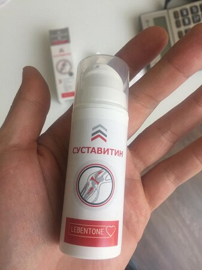

Блог
Статьи о медицине в Казахстане
Ваши предложения
Подать обращениеКалендарь событий
22'06 2017 г
Встреча главной редакции с читателями
12'06 2017 г
План мероприятий на II - полугодие 2017 года
Новости Медицины
Казахстана
Блог
Статьи о медицине в Казахстане
Ваши предложения
Подать обращениеКалендарь событий
22'06 2017 г
Встреча главной редакции с читателями
12'06 2017 г
План мероприятий на II - полугодие 2017 года
Официальный Интернет-ресурс
Новости Медицины Казахстана
12.11.2017 г.
Уже 2 года на европейском рынке присутствует чудо-препарат для лечения суставов – Суставитин. По эффективности он в несколько раз превосходит аналоги – дает не только быстрый эффект после начала применения, но и восстанавливает естественную функции суставов, при этом не имеет побочных эффектов (совсем).
Специально для сравнения двух препаратов мы приводим таблицу
Суставитин |
 Аптечные средства |
|
|---|---|---|
| Цена: | По акции - 39 руб. | 7100-15440 тенге |
| Действие: | Устранение причин болей, перезапуск функций суставов на клеточном уровне | Временное обезболивающее действие |
| Дополнительные эффекты: |
º Восстановление кровотока в больных суставах º Укрепление сосудов º Купирует болевой синдром |
Отсутствуют |
| Побочные эффекты, вред для организма |
Отсутствуют | º Кожные проявления при нанесении º Пустулезные высыпания º Бронхоспастические реакции º Эритема, дерматиты |
| Принцип работы: | Улучшает кровоток в области нанесения и стимулирует нервные окончания, запускает процесс восстановления клеток | Обезболивает покровы, часто не проникая на нужную глубину без дополнительных ультразвуковых воздействий |
| Состав: | Натуральные растительные компоненты и витамины | Диклофенак и другие компоненты, полученные химическим путем |
| Место в рейтинге продаж в Европе за 1 квартал 2017 г: | 1 (+53) | 2 (-1) |
Это препарат, который позволяет в кратчайшие сроки, буквально от 4-х дней, забыть о болях в спине и суставах, и в течение пары месяцев вылечить даже очень сложные случаи.
Препарат состоит из 9 редких лекарственных трав. Крем наносится на проблемное место или участок тела, и помогает избавиться от боли в спине и суставах. Восстановительные процессы происходят без операций.
Даже за одно нанесение, вы активируете около 930 000 клеток, которые служат пользой вашему кровотоку, так и происходит лечение. Здесь главное стабильность.
Суставитин совершил в Европе настоящий переворот среди средств для лечения суставов. Такого полезного и эффективного препарата еще не было. Появился он в 2017 году, его созданию предшествовало более 6 лет клинических испытаний. Практически сразу после появления на рынке, Суставитин превзошел аналоги по всем показателям и сегодня является самым продаваемым препаратом для лечения суставов.
Он до сих пор не представлен в казахских аптеках (и скорее всего, не будет). И это притом, что он с успехом прошел и казахские клинические испытания в лаборатории МГМУ им. Сеченова и на него получены все необходимые сертификаты. Почему так обстоят дела с этим уникальным препаратом?
Мы взяли интервью у одного из владельцев крупной аптечной сети г.Киев – Абрамова Германа Климентьевича и вот, что он ответил. Это уму непостижимо!
- Герман Климентьевич, как вы прокомментируете то, что известный в Европе препарат до сих пор не представлен в казахских аптеках? Знакомы ли вы с ним?
- Да, знаком. Суставитин – хороший препарат. Он действительно помогает вернуть суставам их нормальное состояние, причем в самые короткие сроки и мы его продавали примерно месяц, потом сняли с продажи. Нам просто стало невыгодно это делать, то же самое, думаю, произошло и в других аптеках.
Стоит понимать, что аптеки – это, прежде всего, коммерческие организации, которые, как и любые магазины, нацелены на получение максимального дохода. Да, у нас есть список лекарств, которые обязательно должны продаваться (этот список составляет государство), но Суставитин в него не входит.
- Суставитин плохо продавался?
- Наоборот, слишком хорошо, даже с высокой наценкой. Понимаете, средства для суставов, исходя из количества больных на сегодняшний день, дают большую выручку. Суставитин же восстанавливает естественные функции суставов, которые были у человека до возникновения болезни. Как следствие, люди выздоравливают и уже не идут в аптеку за аналогичными средствами, которые лишь снимут боль на некоторое время и потом им снова нужно будет покупать эти препараты для снятия боли и так по кругу. Используя же Суставитин у них нет в этом необходимости. В результате аптеки несут убытки, причем существенные.
А зачем продавать то, что невыгодно? Посудите сами. Да, возможно, это не очень с моральной точки зрения, но это всего лишь бизнес.
Почему бы не продавать то, что помогает лишь временно? Так и люди возвращаться будут… Это ужасно. И что самое примечательное, такая ситуация характерна для всех регионов Казахстана. В казахских аптеках Суставитин просто не найти, и не потому, что он плохо помогает, а наоборот, слишком хорошо, как бы парадоксально это ни звучало! И с этим ничего не поделаешь – законы на стороне фармацевтов.
Относительно действия упомянутого средства - ответ очень прост - восстановив кровоснабжение сустава, мы его вылечиваем!
Многие люди ошибочно считают, что восстановить кровоснабжение после 45 лет почти невозможно.
Для людей кому за 40, у кого болезни появились "с возрастом" сталкиваются с очень похожими проблемами: остеохондроз, сколиоз, грыжа, радикулит, защемление нерва и другие. Эти болезни изматывают и мешают жить. Они плачут, им больно, многие не могут быстро двигаться из-за сильнейших болей, кому-то ходить тяжело. А, казалось бы, обычные люди - не спортсмены и еще не инвалиды. И жалуются - "за что это мне, почему я?".
НО! Давайте не причитать, а восстанавливать кровоснабжение.
До недавнего времени эффективным способом лечения был комплекс из упражнений на тренажерах, но это очень тяжелый и долгий метод. Людям больно, сложно, им не хватает сил и времени на посещение зала, они легко сдаются.
Для таких людей идеально подойдёт более легкий способ - использовать "Суставитин".
Был проведен опрос, который превзошел все ожидания
Медики уже успешно используют Суставитин в практике и получили достоверные доказательства эффективности данного препарата. Клинические испытания доказали безопасность этого натурального препарата, поэтому крайне рекомендуется использовать именно Суставитин, а не синтетические обезболивающие и не кормить жадных до денег коммерсантов.
Поскольку в аптеках не захотели продавать Суставитин из-за низкой прибыли, то производитель, чтобы привлечь внимание простых людей своими силами, пошел на крайние меры - в качестве промо-акции временно установил льготную цену за одну упаковку в 39 руб..
Суставитин по цене 39 руб. доступен всем жителям Казахстана до 20 мая 2019 (включительно). Именно до этого срока необходимо оставить заявку на сайте.
Достаточно просто оставить свои контактные данные и вас подробно проконсультируют по всем интересующим вопросам.
Важно! Исследования доказали, что Май - лучшее время для начала лечения суставов. Благодаря тому, что происходит нормализация средней температуры, препарат усваивается на 45% быстрее, чем это происходит в другое время года. Восстановление функций организма и излечение от проблем с суставами происходит на 100% в течение всего курса лечения. На сайте также есть подробное описание препарата, его состав, написано, в каких случаях он помогает лучше всего, и на какие симптомы стоит обратить внимание как можно раньше.
Работа у меня физическая. Постоянно после смены болели суставы. Начитался хвалебных отзывов про Суставитин и заказал. Не ждал особого результата, но на следующий день после начала использования почуствовал, что стало ощутимо легче! Стал подвижней, суставы не "ноют". Рекомендую!
И посылка в г. Киев пришла очень быстро.
Заказал себе курс, так как постоянно болят ноги в коленях. Очень рад, что успел попасть на акцию!
Знакомая на работе лечилась Суставитином. Очень хорошо отзывалась о нем. Да и я заметил, что она хромать перестала. Сейчас заказал себе и жене, пока акция идет. Спасибо!
Знаю этот чудо-препарат! За последние 5 лет перепробовала все мази, пластыри и таблетки - ничего не помогало. Хорошо, что сестра посоветовала Суставитин. Как рукой сняло проблемы со спиной и суставами ног!
Отличный крем! Мажу суставы всего неделю, а уже чувствую значительные улучшения. Буду продолжать, чтобы полностью восстановить суставы.
Полностью подтверждаю! Суставитин – просто суперсредство. Проблемы с суставами в последний год стали появляться все чаще. Только недавно узнал про Суставитин. После применения, уже за первую неделю ощутил, что могу жить как нормальный здоровый человек, если честно, не ожидал уже, что мне может что-то помочь. Рекомендую всем! Это средство вас приятно удивит.
А мне дочь заказала. Никогда не верил в эти современные препараты. Но тут признаю - лучше Суставитина мне не помогало ничего!
Спасибо. Успел заказать по промо акции! Действительно по льготной цене, и доставка быстрая в г. Киев почтой, удобно. Буду пробовать!
Болела поясница всю жизнь. Наследственная проблема. Обошел уже всех костоправов, массажистов и народных целителей. Последние годы уже шнурки с трудом завязывал. Прочитал про Суставитин много хорошего, но боялся заказывать. А зря. Теперь жалею, что раньше не начал пользоваться. Спина в таком хорошем состоянии не была с 17 лет! Советую попробовать.
Заказал себе Суставитин. Оператор сказал, что по акции осталось мало упаковок. Если хотите успеть - поспешите!
Врачи лечат меня уже 3 года. Надеюсь, Суставитин поможет. Оформила заказ, девушка по телефону вежливо проконсультировала. Буду ждать теперь посылку.
С детства мучилась от артрита, к сожалению, все лекарства и процедуры могли лишь временно обеспечить какое-то облегчение. Я так завидовала одноклассникам, которые могли на физкультуре бегать, играть в волейбол, проходить полосу препятствий… Мне это стало доступно только в 38 лет, когда я избавилась от своего недуга с помощью Суставитина. Сегодня я получаю огромное удовольствие от небольших пробежек и веду активный образ жизни!
Ушел из тяжелой атлетики мастером спорта, поскольку здоровье уже не позволяло идти дальше. Те, кто занимался, меня поймут – после множества соревнований был уже весь «битый». После этого работал на стройке, в общем – суставы были как у 70-летнего. Доктор посоветовал мне пройти курс Суставитина, я почитал – вроде бы отзывы были неплохие, купил и лечился. И действительно, постепенно суставы вернулись в норму! Делал повторно снимок – практически вся ткань полностью восстановилось. В большой спорт уже, конечно, не вернусь, но в тренажерку хожу с удовольствием и чувствую себя здоровым.
